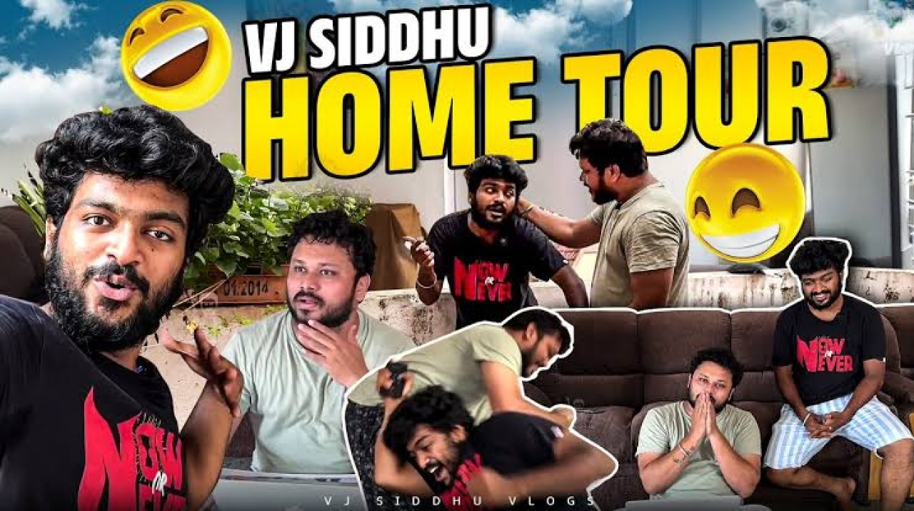

ThyView
Follow · 31 October at 22:14
Siddhu made his television debut in 2019 with the reality game show "Killadi Rani" on Jaya TV. His YouTube channel, VJ Siddhu Vlogs, has also been well-received, with several of his videos amassing millions of views.
